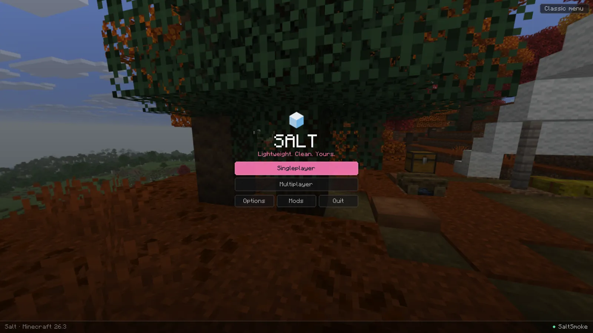
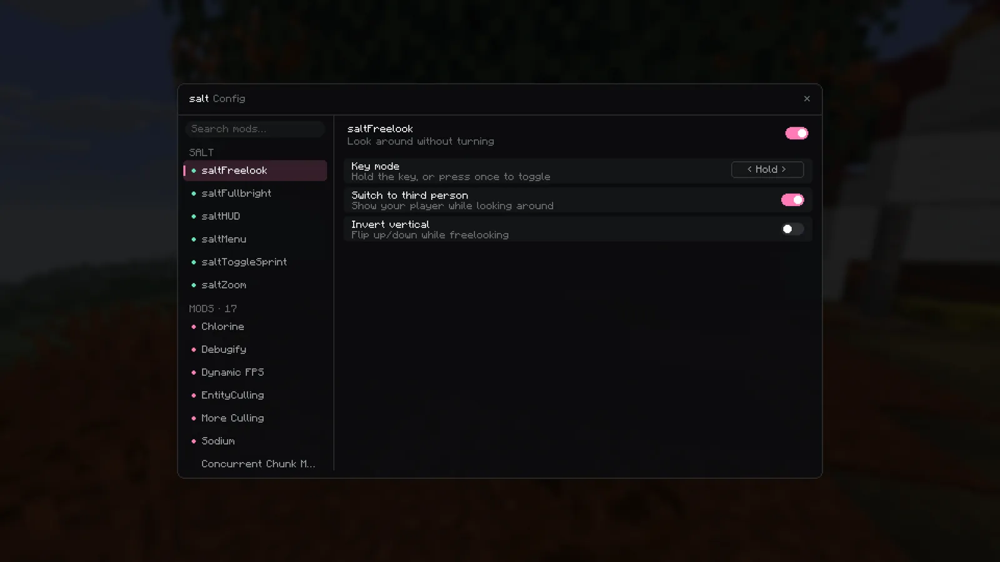
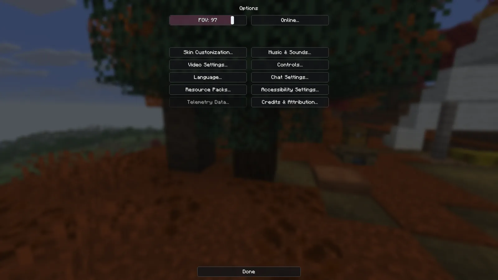

The Salt bundle
Performance mods go in automatically, matched to your version: Sodium, Lithium, FerriteCore, EntityCulling, ImmediatelyFast, ModernFix, Chlorine and more. Switch any of them off in Settings.
Minecraft launcher · Windows 10 & 11
Lightweight. Clean. Yours.
A fast launcher with its own Fabric mods built in: a HUD you drag into place, zoom, freelook, toggle sprint, fullbright and a cleaner menu. It sets up every release from 1.21 to 26.3 for you.
v0.1.0 · free · needs a Minecraft: Java Edition account

The launcher
Each instance is its own Minecraft install with its own mods, worlds and settings. Salt downloads the game, Java and Fabric, then adds the mods that actually support that version.
Built in Rust with Tauri: the interface uses the WebView2 engine already in Windows instead of shipping its own copy of Chromium. Measured in Task Manager on Windows 11, launcher plus its WebView2 processes.
Performance mods go in automatically, matched to your version: Sodium, Lithium, FerriteCore, EntityCulling, ImmediatelyFast, ModernFix, Chlorine and more. Switch any of them off in Settings.
Browse mods, resource packs, shaders and modpacks from both sites inside the launcher, and install with one click. Dependencies come along.
Lay out FPS, CPS, ping, coordinates, keystrokes, armour, potions and more before you even launch. The layout syncs into every instance.
Sign in through Microsoft in your own browser, so Salt never sees your password. Tokens live in Windows Credential Manager. No analytics, no ads.
Read the privacy notesSee what friends are playing, chat, and send world invites. It runs on a small server you can host yourself, and it only ever learns your username.
Game and launcher logs in one place, with sign-in tokens scrubbed out, so you can share a crash without sharing your account.
In game
Small, separate Fabric mods, one jar each. All keys can be changed under Controls → Salt.


Versions
Minecraft changes its code a little almost every release, so Salt's mods are built once per group of versions that share the same code. Every release in a group gets the same jars.
26.3Tested26.2Tested26.126.1.126.1.2Tested1.21.11Tested1.21.91.21.10Tested1.21.61.21.71.21.8Tested1.21.21.21.31.21.41.21.5Builds1.211.21.1Tested1.81.8.9Launcher only, mods coming"Tested" means the game booted to the Salt title screen with every Salt mod loaded. Vanilla instances work on any of these versions too.
FAQ
Yes. Salt launches the official Minecraft: Java Edition and checks that your account owns it. It doesn't unlock or share the game.
Salt's mods are visual and quality-of-life only, like other popular PvP clients: HUD, zoom, freelook, toggle sprint and fullbright. Some servers have their own rules about client mods, so check a server's rules if you're unsure.
Nothing for itself. There are no analytics or telemetry. Sign-in tokens stay in Windows Credential Manager and only go to Microsoft and Mojang. Full privacy notes.
Not yet. Salt is built with Tauri, so other platforms are possible later, but only Windows is built and tested today.
The installer isn't code-signed yet, so SmartScreen may warn you. Click More info, then Run anyway. You can also build it yourself from the source.